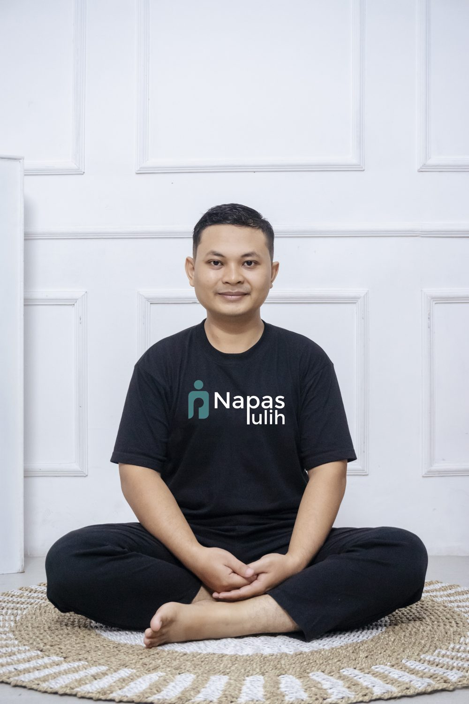

Dika Duwiyanto, S.Ag., M.Psi.
Instruktur napas fungsional bersertifikat Oxygen Advantage® dan pendiri Napas Pulih.
Latar belakang pendidikan Dika memadukan dua dunia: S1 Tasawuf dan Psikoterapi, serta Magister Psikologi dengan konsentrasi Psikologi Perkembangan. Dari perpaduan itu lahir Napas Pulih, cara memulihkan diri yang dimulai dari napas dan berujung pada kesadaran.
Ia mendalami pernapasan fungsional lewat Oxygen Advantage®, metode yang dikembangkan Patrick McKeown untuk membantu orang bernapas lewat hidung, lebih ringan, lebih lambat, dan lebih dalam. Pendekatan ini kemudian ia lengkapi dengan latihan kesadaran, agar pemulihan tidak berhenti di tubuh, tetapi juga sampai ke batin.
Selain mengajar, Dika menjabat sebagai Ketua Yayasan Manajemen Tasawuf Indonesia dan berbagi latihan napas lewat YouTube, Instagram, dan Facebook Napas Pulih.

Pendidikan dan sertifikasi
- SertifikasiFunctional Breathing Instructor, Oxygen Advantage®
- MagisterM.Psi., Psikologi, konsentrasi Psikologi Perkembangan
- SarjanaS.Ag., Tasawuf dan Psikoterapi
- OrganisasiKetua Yayasan Manajemen Tasawuf Indonesia
- KaryaSeri e-book Napas Pulih: Napas dan Emosi, Napas dan Kesadaran, Napas dan Performa, Napas dan Metabolisme, Napas dan Tidur, Napas dan Tumbuh Kembang Anak
Cara Napas Pulih bekerja
Berbasis fungsi napas
Napas hidung, ringan, lambat, dan dalam. Prinsip yang bisa diukur dan dipantau kemajuannya.
Lahir dan batin
Napas bukan hanya urusan paru-paru. Napas juga jalan untuk hadir dan menenangkan hati.
Bertahap untuk semua usia
Dari remaja hingga lansia, setiap latihan punya versi yang lebih ringan dan aman.
Mari berlatih bersama
Ikuti latihan napas gratis di media sosial Napas Pulih, atau sapa langsung lewat WhatsApp.